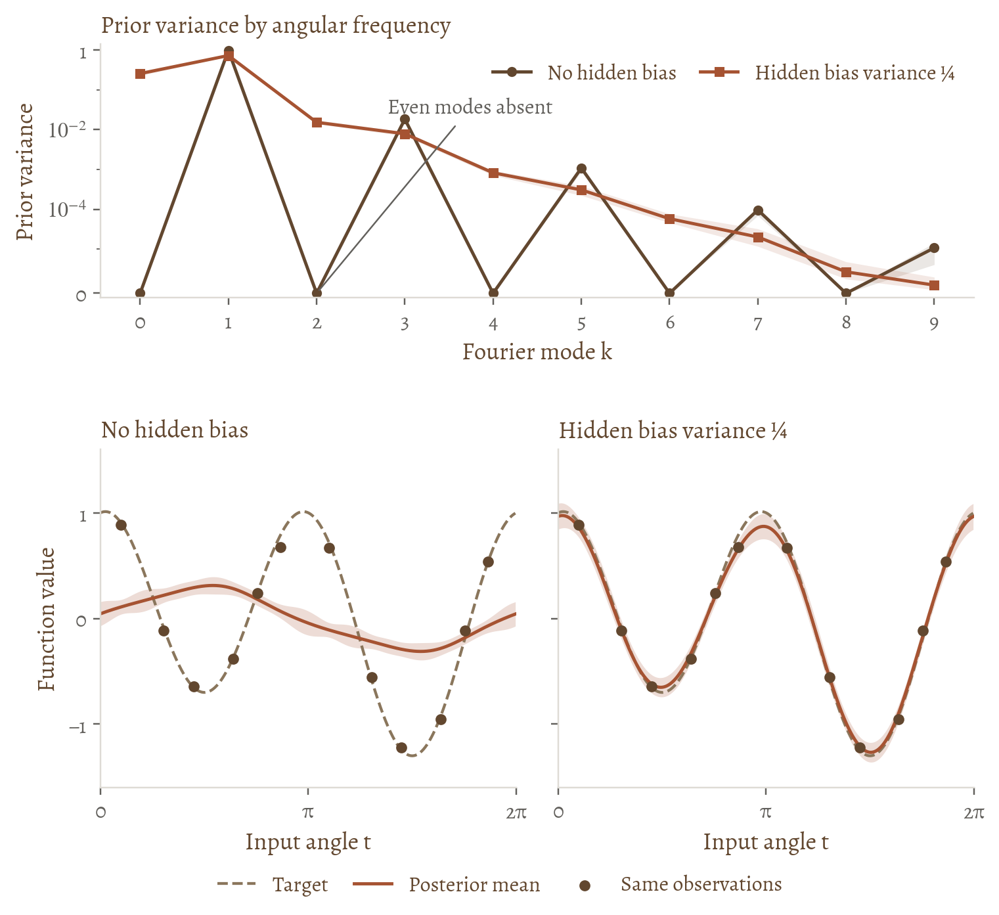
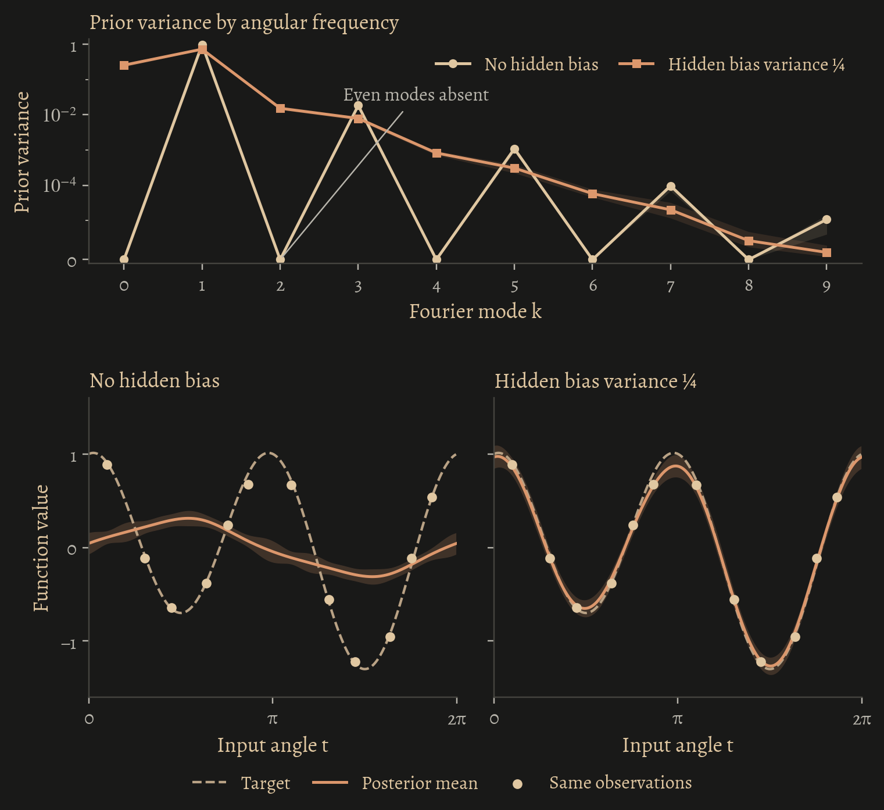
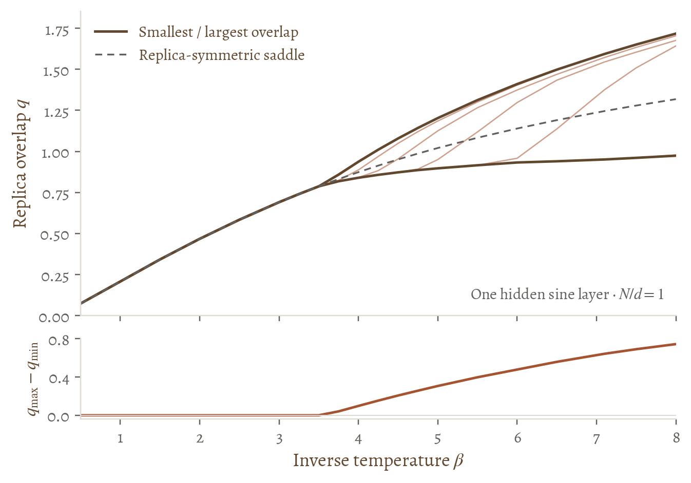
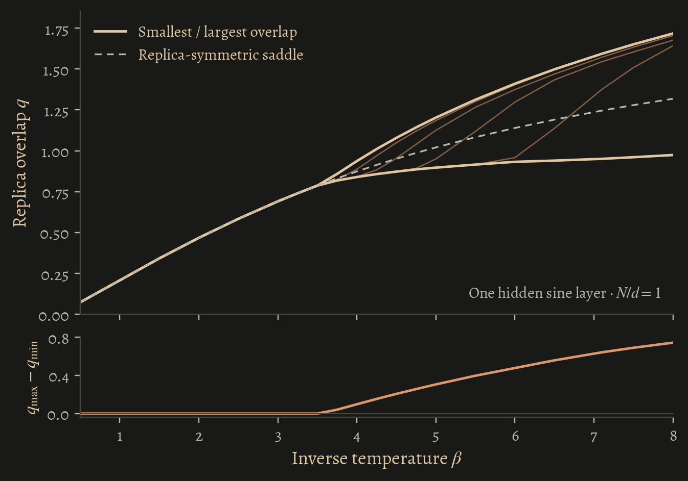

I. Frozen in the Forge
A blacksmith shaping a steel blade has mastered the art of disorder. The smith has to control how the metal cools as carefully as how it is hammered. After heating the metal, they plunge it into water or oil, cooling it fast enough to change its internal structure. With the right steel and heat treatment, the blade emerges more resilient. Two pieces with the same chemical composition can consequently have vastly different properties, due to the difference in the timescales they were cooled under. The history of a smith's forge survives in the arrangement of the atoms of their work.
The element the smith must control is carbon. Its atoms fit into gaps between the iron atoms. Slow cooling gives them time to redistribute, while a rapid can trap them in a different arrangement. That changes how easily the steel deforms, letting the smith shape its properties through the timing of the cooling.1, 2
Physics borrows the words and from these heat treatments. Annealing gives atoms time and thermal mobility to rearrange toward a more stable structure. Quenching makes further rearrangements too slow to matter during an observation. On the timescales we care about, some variables become effectively frozen, while others can still change. A variable is quenched when it stays fixed while we study the others.3
Consider copper with a small amount of manganese mixed into it. Each manganese atom acts like a tiny magnet. Its describes that magnet's strength and direction, which we can picture as an arrow. After the alloy cools, the atoms can stay in place while these arrows keep changing direction. The positions are quenched, while the magnetic directions can fluctuate.4, 10
Where the atoms end up determines how their magnets interact. Some pairs prefer to point in the same direction, others in opposite directions. When these preferences can't all be satisfied together, the system is . We can see it with just three arrows, each allowed to point up or down.5
We now have two kinds of randomness to keep track of. Within one sample, spins fluctuate while the atomic positions stay fixed. Across samples, the positions differ too. Studying quenched disorder means working out what happens within each fixed sample before averaging over possible samples.3
A neural network gives us the same choice. A dataset can define a fixed learning problem while we compare possible choices of weights. For a particular network, we can hold the weights fixed and study its responses to different inputs. What we call disorder depends on which variables define the instance and which we allow to vary. will give us a way to calculate properties averaged over those frozen instances.6, 7
II. Seeing Double
To turn frozen disorder into a calculation, consider \(N\) spins, each pointing up or down, \(s_i\in\{-1,+1\}\). Give each spin a local bias \(h_i\) that favors one direction. We draw these biases independently from a , then hold them fixed while the spins fluctuate. The of a is \[ H(s;h)=-\sum_{i=1}^{N}h_i s_i, \qquad h_i\sim\mathcal N(0,\Delta^2). \]
Here, \(\Delta\) controls the strength of the disorder. At temperature \(T\), the probability of a configuration is proportional to \(e^{-\beta H}\), where \(\beta=1/(k_{\mathrm B}T)\). Lower temperatures give greater weight to configurations that follow their local biases. The is the , \[ Z_h(\beta) = \sum_{s_1,\ldots,s_N=\pm1} e^{\beta\sum_i h_i s_i} = \prod_{i=1}^{N}2\cosh(\beta h_i). \] Intuitively, the partition function counts the available spin configurations, weighting each by how energetically favorable it is at the chosen temperature.
Each frozen sample has its own partition function and its own , \(F_h=-\beta^{-1}\log Z_h\). The logarithm makes free energies additive when independent systems are combined, and its derivatives give quantities such as the average energy. To characterize samples drawn from our disorder distribution, we average their free energies. This gives the quenched free energy per spin, \[ f_{\mathrm q} = -\frac{1}{\beta N}\,\mathbb E_h[\log Z_h]. \]
In \(\mathbb E_h[\log Z_h]\), each sample equilibrates with its disorder frozen before we average, while \(\log\mathbb E_h[Z_h]\) lets the disorder equilibrate alongside the spins, so they describe strictly different physics. The latter gives the annealed free energy per spin, \[ f_{\mathrm a} = -\frac{1}{\beta N}\log\mathbb E_h[Z_h]. \] gives \(\mathbb E_h[\log Z_h]\leq\log\mathbb E_h[Z_h]\), so \(f_{\mathrm a}\leq f_{\mathrm q}\) and the annealed free energy is a lower bound on the quenched free energy.
Averaging \(Z_h\) directly can give disproportionate weight to rare samples with unusually large partition functions. For quenched disorder, every sample first gets its own normalized .3
Our example also makes the large-system limit transparent. Since \(\log Z_h\) is a sum of independent contributions, the gives \[ \frac{1}{N}\log Z_h \;\longrightarrow\; \mathbb E_{h\sim\mathcal N(0,\Delta^2)} \log[2\cosh(\beta h)] \] as \(N\to\infty\), with temperature and disorder strength held fixed. The free energy per spin becomes predictable even though the microscopic biases remain random. This concentration around a common value is called .
In more complicated systems, averaging the logarithm becomes difficult. The approaches it through powers of the partition function, \[ \mathbb E_h[\log Z_h] = \lim_{n\to0} \frac{\mathbb E_h[Z_h^n]-1}{n}. \] This identity holds under suitable . Its advantage appears when \(n\) is a positive integer. Multiplying \(n\) partition functions introduces \(n\) independent spin configurations, all experiencing the same frozen biases. These configurations are the replicas. For our Gaussian fields, averaging over the biases gives \[ \mathbb E_h[Z_h^n] = \sum_{\{s_i^a=\pm1\}} \exp\left[ \frac{\beta^2\Delta^2}{2} \sum_{i=1}^{N} \left(\sum_{a=1}^{n}s_i^a\right)^2 \right]. \]
The index \(a\) labels a replica. Expanding the square produces terms involving \(s_i^a s_i^b\), so averaging over the shared disorder couples the replicas mathematically. Their common environment creates correlations that survive the average. This suggests tracking their , \[ Q_{ab} = \frac{1}{N}\sum_{i=1}^{N}s_i^a s_i^b. \]
An overlap of \(1\) means that two configurations agree everywhere, while \(-1\) means that every spin points oppositely. In our example, the overlap between distinct replicas concentrates around \(q=\mathbb E_h[\tanh^2(\beta h)]\) as \(N\) grows. Both configurations tend to follow the same local biases.
For interacting systems, the large-\(N\) calculation often becomes an over an overlap matrix. The assigns one common value to every off-diagonal entry, \(Q_{ab}=q\) for \(a\ne b\). allows further structure in those overlaps, describing how equilibrium configurations organize into distinct groups of states. Whether that additional structure is needed depends on the model and its regime.7
For neural networks, the first step is choosing what a replica contains. With a fixed dataset, replicas can be different parameter configurations. With fixed weights, they can be different inputs. That choice determines the partition function, the disorder average, and what an overlap can tell us about the network.
III. Lessons in the Grain
A training dataset is a particular realization of a much larger collection of possible observations. We could have collected different examples, measured different noise, or sampled different labels. Once we begin learning, though, we usually hold that realization fixed. The dataset becomes the environment in which the network's parameters are allowed to vary.
Write our dataset as \(D=\{(x^\mu,y^\mu)\}_{\mu=1}^{P}\), and let \(f_\theta(x)\) denote a network with parameters \(\theta\). For a regression problem, suppose we model each label as the network's output plus independent Gaussian noise of \(\sigma^2\). The squared error then plays the role of an energy, \[ E_D(\theta) = \frac12\sum_{\mu=1}^{P} \bigl(f_\theta(x^\mu)-y^\mu\bigr)^2. \]
gives us a precise statistical over networks. Starting from a \(p_0(\theta)\), we condition on the observed data to obtain \[ p_\beta(\theta\mid D) = \frac{p_0(\theta)e^{-\beta E_D(\theta)}}{Z_D(\beta)}, \] \[ Z_D(\beta) = \int d\theta\,p_0(\theta)e^{-\beta E_D(\theta)}, \] where \(\beta=\sigma^{-2}\). The prior provides the reference measure over parameters, and the favors networks that explain the observations. The partition function measures the prior-weighted volume of networks compatible with the data. A larger \(\beta\) means that we assume less observation noise, so discrepancies with the training labels receive a stronger penalty.
The dataset is now the quenched disorder, and the parameters are the fluctuating variables. Each dataset defines its own and partition function. To study a distribution of learning problems, we first solve the inference problem for each fixed dataset, then average quantities such as \(\log Z_D\) over the possible datasets.
A replica is an independent parameter sample from this posterior. Two replicas share every training example and label, but they can explain those observations using different weights. These are samples from a specified probability distribution over networks. Whether a training algorithm actually samples that distribution is a separate question about its dynamics.
The replicated partition function has the same structure we encountered for spins, \[ \begin{aligned} \mathbb E_D[Z_D^n] &= \int \prod_{a=1}^{n} \bigl[d\theta^a\,p_0(\theta^a)\bigr]\\ &\qquad\times \mathbb E_D \exp\!\left[ -\beta\sum_{a=1}^{n}E_D(\theta^a) \right]. \end{aligned} \] Every term inside the sum contains the same dataset. Averaging over that shared dataset couples the replicas mathematically, because the same random observations constrain all of them.
Their relationship also has a direct interpretation in learning. If two posterior samples make different predictions on a new input \(x\), their disagreement measures uncertainty that the training data have left unresolved. For independent replicas \(\theta^a\) and \(\theta^b\), \[ \begin{aligned} &\frac12\, \mathbb E_{\theta^a,\theta^b\mid D} \left[ \bigl(f_{\theta^a}(x)-f_{\theta^b}(x)\bigr)^2 \right]\\ &\qquad= \operatorname{Var}_{\theta\mid D} \bigl[f_\theta(x)\bigr]. \end{aligned} \] This identity holds for any posterior with a finite predictive variance. It gives replicas an immediate purpose: comparing possible networks tells us how confidently the ensemble predicts beyond its training examples.
We can work through the entire calculation for a single linear neuron, \[ f_w(x)=w^\top x, \qquad w\sim\mathcal N(0,\tau^2 I_d). \] Collect the training inputs into the rows of a matrix \(X\in\mathbb R^{P\times d}\), and the labels into \(y\in\mathbb R^P\). The posterior combines the Gaussian prior with a quadratic training error, so completing the square gives another Gaussian, \[ p(w\mid D)=\mathcal N(m_D,C_D), \] \[ C_D = \left( \tau^{-2}I_d+\sigma^{-2}X^\top X \right)^{-1}, \] \[ m_D = \sigma^{-2}C_DX^\top y. \]
The posterior mean is a predictor. The tells us what remains uncertain about its weights. Along an of \(X^\top X\) with \(s\), the posterior variance is \[ \frac{1}{\tau^{-2}+\sigma^{-2}s}. \] Large eigenvalues correspond to directions that the observations constrain strongly. A direction in the of \(X\) retains its original variance \(\tau^2\), because changing the weights along that direction leaves every training prediction unchanged. The frozen dataset determines which combinations of weights learning can identify.13 The full Gaussian integral is worked out in the appendix.
To connect that uncertainty to new predictions, suppose training and test inputs are drawn independently from \(\mathcal N(0,I_d/d)\). This normalization keeps typical outputs of order one as \(d\) grows. Averaging over a fresh test input gives \[ \begin{aligned} \mathbb E_x\, \operatorname{Var}_{w\mid D}(w^\top x) &=\mathbb E_x[x^\top C_Dx]\\ &=\frac1d\operatorname{Tr}C_D. \end{aligned} \] Under the stated Bayesian model, this is also the expected squared error of using the posterior mean to predict the unknown, noiseless response. Predicting a noisy label adds the observation variance \(\sigma^2\). If the model is misspecified, posterior uncertainty and actual prediction error can differ.
The relevant lets the number of examples and the input dimension grow together, \[ P,d\longrightarrow\infty, \qquad \frac{P}{d}\longrightarrow\alpha, \] with the prior scale and observation noise held fixed. The ratio \(\alpha\) measures how many observations constrain each parameter. For Gaussian inputs with \(P<d\), there are almost surely \(d-P\) directions that the dataset never observes. Even as the assumed noise tends to zero, those directions retain their prior uncertainty, leaving an average predictive variance of \(\tau^2(1-P/d)\). Once the inputs span the whole parameter space, that particular source of uncertainty disappears. At finite noise, the full spectrum of \(X^\top X\) determines how much uncertainty remains.
The partition function connects this calculation to . Integrating over the weights produces a contribution, \[ -\frac12 \log\det\!\left( I_d+\frac{\tau^2}{\sigma^2}X^\top X \right). \] It records how the observations narrow the ensemble along different directions. Averaging it over random datasets means studying the eigenvalues of a random design matrix. This gives us a setting where replica calculations can be checked against Gaussian integration and established results about .11
Adding layers makes the weight ensemble more complicated even when every remains linear. A represents a linear function of its input, but its output depends on products of weight matrices. Independent Gaussian priors on those matrices consequently induce a different distribution over predictors from a Gaussian prior on one effective weight vector.
Li and Sompolinsky study this ensemble by integrating out the learned weights layer by layer. Each integration changes the governing the remaining problem, with the change determined by . Their controlled limit sends the hidden width \(N\), input dimension \(d\), and sample count \(P\) to infinity together, keeping \(P/N\) and \(P/d\) finite at fixed depth. The resulting theory describes how depth, width, and the training task affect prediction and uncertainty in deep linear networks.14
We can see a prior's preference directly in a small nonlinear example. Put the inputs on a circle, \(x(t)=(\cos t,\sin t)\), and freeze 512 . Only their coefficients are learned, using an exact Gaussian posterior and twelve noisy observations of \(\cos(2t)+0.3\sin t\). Without hidden biases, every feature obeys \(\phi(t+\pi)=-\phi(t)\), so every possible readout does too. The prior excludes the target's even component before seeing a single label.


Giving the hidden neurons Gaussian biases makes those even modes available. We reduce the hidden weight variance at the same time, keeping the variance of the signal entering each tanh fixed. Across eight paired feature draws, the root mean squared prediction error falls from \(0.708\) to \(0.058\). The narrow uncertainty band in the bias-free model doesn't rescue it: the posterior is confident within a family that cannot express the target. This is a deliberately mismatched example, showing how architectural assumptions survive Bayesian conditioning. The experiment details separate this restricted readout model from inference over every weight.
Quenched disorder alone doesn't require replica symmetry breaking. Our single-neuron posterior is Gaussian, and its uncertainty can be described without a hierarchy of distinct equilibrium states. For a more complicated learning ensemble, the question is whether independently sampled solutions organize into groups whose overlaps require additional structure. Multiple minima in a parameterization don't settle that question, especially when different weights can represent the same function.
A concrete example comes from the , where one studies weights of fixed norm satisfying random constraints \(y^\mu w^\top x^\mu\geq\kappa\). Here the ensemble is uniform over the allowed weights. In the , its solution space develops a hierarchical structure near the threshold where the constraints become impossible to satisfy. Replica symmetry breaking describes that organization and changes the prediction of the feasibility boundary. The disorder is still the frozen collection of training patterns, but the geometry of compatible weights is much richer than in Gaussian regression.15
Throughout these examples, the dataset defines the instance and the weights explore its possible explanations. Next we can reverse that choice, freezing one particular network and letting its inputs vary.
IV. Walking on Frozen Ground
We have been asking which networks could explain a fixed set of observations. Now choose one network and keep it. Its weights no longer fluctuate. They define a landscape over the inputs, and our configurations are points in that landscape. Two replicas are two inputs presented to the same network.
Let the scalar output of this network be \(H_W(x)\), and choose a reference distribution \(p_0(x)\). We can explore its responses through the input ensemble \[ p_{\beta,W}(x) =\frac{p_0(x)e^{-\beta H_W(x)}}{Z_W(\beta)}, \] \[ Z_W(\beta)=\int dx\,p_0(x)e^{-\beta H_W(x)}. \] At \(\beta=0\), we simply draw ordinary inputs from \(p_0\). Positive \(\beta\) favors inputs with lower outputs. Replacing \(H_W\) by \(-H_W\) lets us investigate unusually high outputs instead. The input distribution and the output we choose to tilt are both part of the model.
This construction gives a statistical meaning to searching the input space. An optimizer follows one trajectory toward an extreme response. The asks how much input probability lies at different outputs and how inputs producing those outputs relate to one another. A very low output might occur in an exceptionally small region, while slightly less extreme outputs might be available throughout a much larger region. Temperature controls this competition between output value and probability mass.
The partition function packages that information. Writing \(\langle\cdot\rangle_{\beta,W}\) for an average over inputs drawn from this ensemble, \[ -\frac{\partial}{\partial\beta}\log Z_W =\langle H_W(x)\rangle_{\beta,W}. \] Its second derivative is the variance of the output under the tilted distribution, when the required moments exist. The same function consequently describes both the mean response selected by the tilt and the fluctuations around it. Averaging \(\log Z_W\) over weight realizations then asks what this landscape looks like for networks drawn from the specified initialization ensemble.
A linear neuron already shows how the two kinds of randomness separate. Take \(H_v(x)=v^\top x\), with frozen \(v\), and draw reference inputs from \(\mathcal N(0,I_d)\). Completing the square gives \[ p_{\beta,v}(x)=\mathcal N(-\beta v,I_d), \qquad \log Z_v=\frac{\beta^2}{2}\|v\|^2. \] The tilt shifts the cloud of inputs against the weight vector. Its covariance stays unchanged. Two independent replicas therefore tend to point in a common direction even though their fluctuations are independent.
We can quantify their similarity with the input overlap, \[ Q_{ab}=\frac1d(x^a)^\top x^b. \] For distinct replicas in this linear example, its mean is \(\beta^2\|v\|^2/d\). If \(\|v\|^2/d\) stays finite as dimension grows, the fluctuations of \(Q_{ab}\) vanish. The replicas share a preference without developing a hierarchy of states. The Gaussian calculation below makes this explicit, including a regime where the annealed partition function diverges although the quenched free energy remains finite.
Winer and Hanin apply this perspective to deep random networks with Gaussian reference inputs. They let the input dimension and hidden widths grow proportionally at fixed depth. Their final coefficients have variance one, giving ordinary outputs of order \(\sqrt N\) and allowing the tilted ensemble to select energies of order \(N\). This makes \(\log Z_W/N\) the relevant thermodynamic quantity. The scaling differs from the readout convention we will use for .7
A nonlinear network can organize its favored inputs much less simply than the shifted Gaussian cloud. Imagine drawing two inputs independently from the same low-temperature ensemble. They might belong to the same group of similar configurations, to different groups, or to groups nested inside larger groups. An overlap distribution records how often these different similarities occur.
In a replica-symmetric description, one off-diagonal overlap describes typical pairs. Replica symmetry breaking allows a richer organization. One step introduces groups with distinct within-group and between-group overlaps. Full RSB allows a hierarchy with a continuous range of overlap levels. The replicas remain independent conditional on the network; the structure concerns where that common probability distribution places its mass.
The paper's numerical solutions of the replica equations find full RSB for sinusoidal activations in the regimes examined, while shallow and tanh examples are replica symmetric. The linear case is analytically solvable. These results concern particular architectures, normalizations, and regimes, rather than a classification of all networks using those activations.7 They show why choosing an activation can change the geometry of important inputs even when the weights are drawn by an otherwise similar procedure.
We can make that change visible by solving a finite hierarchy of replica equations ourselves. Take one hidden sine layer, with the same variance-one readout convention, and grow width and input dimension together at \(N/d=1\). At higher temperatures the overlap levels coincide. As we cool the system, the solution separates into branches: one common similarity no longer describes the hierarchy.


On this temperature grid, the branches separate between \(\beta=3.5\) and \(3.75\), where an independent local stability check also finds that the replica-symmetric solution becomes unstable. This is a numerical result within a finite-step ansatz. Finer hierarchies and integration grids check its resolution; they don't prove the full infinite hierarchy or the global equilibrium solution. Our explicit aspect ratio also means that its transition needn't match the published figure's temperature. The calculation details state the model, normalization, and checks.
This is the insight supplied by frozen weights. The network becomes an environment, and we study the geometry of the inputs that it favors. Generalization in weight space and rare responses in input space can use closely related mathematics while answering different questions.
V. A Different Cast
There is another way to repeat the experiment. Keep a few inputs on the table, draw fresh weights, and observe a new network's responses to exactly those inputs. The architecture stays the same, but each initialization produces another function. We are now studying the joint distribution of those functions' values at our chosen probes.
For a single hidden layer, write \[ f_N(x)=\frac1{\sqrt N}\sum_{i=1}^{N}a_i\phi(w_i^\top x), \] where the pairs \((a_i,w_i)\) are independent and identically distributed. Within each pair, the readout weight \(a_i\) is independent of \(w_i\), with mean zero and variance \(\sigma_a^2\). For fixed probes \(x^1,\ldots,x^m\), each hidden neuron contributes a random vector of \(m\) responses. The network output is a normalized sum of these independent vectors.
With finite second moments, the gives \[ \bigl(f_N(x^1),\ldots,f_N(x^m)\bigr) \;\Rightarrow\; \mathcal N(0,K), \] where \[ K_{\mu\nu} =\sigma_a^2\,\mathbb E_w \bigl[\phi(w^\top x^\mu)\phi(w^\top x^\nu)\bigr]. \] The kernel \(K\) tells us which inputs tend to receive similar outputs across initializations. A Gaussian process is a random function whose values on every finite collection of inputs have a joint Gaussian distribution. The limiting construction gives such a prior over functions.
To watch that limit take shape, fix inputs on the unit circle and draw 2,000 independent one-hidden-layer ReLU networks. Choose \(w_i\sim\mathcal N(0,I_2)\) and \(a_i\sim\mathcal N(0,2)\), so each output has variance one. The animation follows each network as we add hidden neurons and rescale by \(1/\sqrt N\). At small width the paired-output cloud differs visibly from its Gaussian limit. Increasing the width fills in the cloud while preserving the correlations between inputs.


The narrow network's lines along the axes have a simple origin: a ReLU neuron can be silent at one probe while responding at the other. Adding independent neurons smooths out that structure. Covariance alone would miss the change, because it already equals \(K\) at every finite width in this model. What approaches the Gaussian process is the joint distribution, including behavior beyond its first two moments. The animation shows that change at two fixed probes; it doesn't settle the geometry of rare inputs in a growing-dimensional space.
In deep networks, the corresponding kernels propagate through the layers. A layer takes a jointly Gaussian pair of preactivations, applies the activation to each, and uses their expected product to determine the next layer's covariance. The kernel recursion in the appendix spells out the normalization and Gaussian integral. Zavatone-Veth develops this picture, while Lee and collaborators and Matthews and collaborators establish the deep-network Gaussian-process correspondence under their respective assumptions.17, 18, 19
This gives architecture an interpretable statistical effect. Even when the weights have mean zero, the kernel need not treat all pairs of inputs equally. Inputs that the random features tend to represent similarly remain correlated across the ensemble. The activation and its repeated composition through depth determine which distinctions the prior preserves. We can inspect that before fitting any labels.
Conditioning the resulting Gaussian process on a fixed regression dataset connects us back to Bayesian learning. With Gaussian observation noise, the posterior mean and covariance follow from Gaussian conditioning using the kernel on training and test inputs. This is the function-space counterpart of the weight-space Gaussian calculation for the linear neuron. Lee and collaborators use the correspondence to perform Bayesian prediction for infinitely wide deep networks.18
The order of limits matters here. In the familiar fixed-probe construction, depth and the number of probes stay finite while hidden widths grow; we can hold input dimension fixed as well. The kernel describes a fixed-size joint output distribution. In the proportional learning limit of section III, the number of observations grows with the network dimensions. The number of constraints is then itself macroscopic. A result derived with finitely many constraints cannot simply be carried into that regime.14, 17
There is a related distinction for input landscapes. Convergence at any specified finite set of probes does not, by itself, control an integral over a growing-dimensional input space with exponential weighting. Such an integral can emphasize inputs that were extremely unlikely under the original distribution. Establishing its limit requires control of that selection and of the tails, along with the 's normalization.
We should also keep the word quenched attached to a defined ensemble. The Gaussian-process construction averages over weights at fixed inputs. It does not by itself introduce a free energy, an equilibrium distribution over inputs, or a question about replica symmetry breaking. Those appear when we specify the additional probability measure and observable. The three perspectives are connected by their choices of conditioning, rather than by three interchangeable uses of the same average.
Random initialization consequently tells us how networks vary across possible preparations. To understand the responses of one particular preparation, we have to keep its actual weights in the calculation.
VI. The Average Within
Suppose someone hands us a network, including every weight, and asks for its average response to Gaussian inputs. We know the function and the input distribution. The remaining problem is an integral, \[ m_W=\mathbb E_{x\sim\mathcal N(0,I_d)}[f_W(x)]. \] Sampling inputs and averaging forward passes is an immediate estimate. But knowing the network's internal computation may let us evaluate or approximate the integral more efficiently.
Averaging over initializations can hide this problem. For a centered, independent final readout, the expectation of \(m_W\) over weights can be zero. A particular network can still have a substantial nonzero input mean. Knowing that positive and negative means cancel across an ensemble gives us little information about the sign and size of the mean for the weights in front of us.
A one-hidden-layer ReLU network makes the distinction exact. Absorb any readout normalization into \(a_i\) and write \(f_W(x)=\sum_i a_i\operatorname{ReLU}(w_i^\top x)\). Gaussian inputs give \[ m_W=\frac1{\sqrt{2\pi}}\sum_i a_i\|w_i\|. \] Each hidden unit contributes its positive half-Gaussian mean, weighted by its actual readout coefficient. The expression is generally nonzero for a fixed network. Centered random readout coefficients make its average over initializations zero. The short derivation below also shows how its fluctuations survive that cancellation.
Replicas give us a way to retain the missing information. Draw two independent inputs, use the same network for both, and average their product, \[ \mathbb E_W[m_W^2] =\mathbb E_{W,x^1,x^2} \bigl[f_W(x^1)f_W(x^2)\bigr]. \] Their turns the product of input averages into a two-input average. If each input received independently redrawn weights instead, the result would factor into the square of the ensemble mean. Sharing the weights is exactly what preserves the variation between network instances.
ARC's recent work studies this fixed-network estimation problem for wide random multilayer perceptrons. Its algorithms take the supplied weights and propagate approximate statistics of the input distribution through the layers. The approximation tracks : the mean, covariance, and higher-order quantities that describe departures from Gaussian behavior. The theory gives settings where these estimates outperform at a specified , with that error subsequently averaged over random weight realizations.20
The reason higher-order statistics matter is visible even in a scalar activation. A Gaussian input is determined by its mean and variance, but passing it through a nonlinear function usually produces a non-Gaussian output. Later layers can depend on features of that distribution that its first two moments do not capture. An approximation that propagates only means and covariances can consequently miss a contribution to the final expectation. Tracking additional cumulants retains more of that information.
In the paper, the proved bounds assume fixed depth, polynomial activations, and specified accuracy regimes as width grows. The experiments also examine ReLU networks. The authors' factorized algorithms exploit the structure of the cumulant calculations to reduce cost, and the numerical comparisons measure accuracy against computational effort.20 The appendix records the theorem's scaling conditions so that the intuitive comparison does not acquire a broader guarantee than the result provides.
This is a practical reason to keep track of quenched structure. The weights contain instance-specific information that can help calculate an average over inputs. Replacing the network by its average over initializations removes the very coefficients the estimator can use. Ordinary expectations commute when integrable, while the conditional expectation retains a dependence on \(W\) that the ensemble mean discards.
The two-replica identity above is an elementary moment identity; ARC's estimation algorithms use cumulant propagation. We can connect their question to the replica language without making the replica trick, or RSB, a required ingredient of every calculation involving a frozen network.
VII. What the Fire Leaves Behind
Across these examples, the architecture alone never specified the statistical system. We also had to choose what was held fixed, what could vary, and which probability measure described that variation. A dataset, an initialized network, and a set of probe inputs each define a different experiment.
| Held fixed | Allowed to vary | What we learn | Typical large-system limit |
|---|---|---|---|
| Training dataset | Posterior parameters | Which explanations remain plausible, and how uncertain their predictions are | Samples and dimension grow at fixed \(P/d\); deep linear theory also keeps \(P/N\) finite |
| Network weights | Inputs under a reference or tilted measure | Average responses, rare outputs, and the geometry of favored inputs | Input dimension and layer widths grow proportionally at fixed depth in the landscape theory |
| Probe inputs | Random initializations | Joint output statistics and the prior over functions | Widths grow at fixed depth and a fixed finite set of probes |
Their large-system limits preserve different balances. In regression, \(P/d\) can remain finite so that data and unknowns grow together. Deep linear learning can keep \(P/N\) finite as well. The input-landscape calculation grows input dimension with width, while the familiar Gaussian-process construction holds a finite set of probes fixed. Calling all of them infinite-width theories leaves out the ratios that determine which effects survive.
Replica symmetry breaking is a further question about the organization of the chosen measure. A quenched instance can have a simple Gaussian ensemble, a single concentrating overlap, or a hierarchy of equilibrium configurations. A nonzero overlap, a complicated network, or an average over random variables is insufficient to choose among those possibilities. The calculation has to establish the relevant structure in the regime being studied.
This also tells us what the analogy with the forge contributes. A smith's preparation leaves a persistent arrangement of material, and that arrangement shapes what the blade can subsequently do. In our learning problem, a fixed dataset shapes the explanations available to a network. In our input problem, fixed weights shape its possible responses. Changing which variables we freeze changes the possibilities we are asking about.
Disorder becomes useful when we give it that precise role. The microscopic details can be random, while their consequences admit a predictable theory. We can calculate how much remains uncertain, how unusual responses are organized, and when knowing the particular realization helps us do better than averaging it away.
Appendix. Beneath the Surface
The calculations below supply the algebra behind the examples. Each uses the measure and normalization stated in the main text.
A. Completing the Bayesian square
For the linear model, the negative log posterior, up to terms independent of \(w\), is \[ \begin{aligned} &\frac{\|w\|^2}{2\tau^2}+\frac{\|Xw-y\|^2}{2\sigma^2}\\ &\qquad=\frac12 w^\top A w-b^\top w+\frac{y^\top y}{2\sigma^2}, \end{aligned} \] with \(A=\tau^{-2}I_d+\sigma^{-2}X^\top X\) and \(b=\sigma^{-2}X^\top y\). Since \(A\) is for \(\tau,\sigma>0\), set \(C=A^{-1}\) and \(m=Cb\). Then \[ \begin{aligned} &\frac12w^\top Aw-b^\top w\\ &\qquad=\frac12(w-m)^\top A(w-m)-\frac12b^\top Cb. \end{aligned} \] This proves the posterior mean and covariance in section III.
Including the normalized prior, the Gaussian integral gives \[ \begin{aligned} \log Z_D={}&-\frac12\log\det\!\left(I_d+\frac{\tau^2}{\sigma^2}X^\top X\right)\\ &-\frac{y^\top y}{2\sigma^2}+\frac{y^\top XCX^\top y}{2\sigma^4}. \end{aligned} \] The determinant records the change in volume, while the remaining terms depend on the observed labels. Multiplication by \((2\pi\sigma^2)^{-P/2}\) restores the normalized Gaussian likelihood and yields the evidence.
For an independent test input with covariance \(I_d/d\), the identity \(x^\top Cx=\operatorname{Tr}(Cxx^\top)\) gives \(\mathbb E_x[x^\top Cx]=\operatorname{Tr}C/d\). In a null direction of \(X\), \(C\) has eigenvalue \(\tau^2\). The other eigenvalues tend to zero as \(\sigma\downarrow0\) at fixed full-rank design on its observed subspace. This gives \(\tau^2(d-P)/d\) when \(P<d\).
B. A linear landscape, including a divergent annealed average
Let \(x\sim\mathcal N(0,I_d)\) and \(H_v(x)=v^\top x\). The exponent satisfies \[ -\frac12\|x\|^2-\beta v^\top x =-\frac12\|x+\beta v\|^2+\frac{\beta^2}{2}\|v\|^2. \] Thus \(Z_v=e^{\beta^2\|v\|^2/2}\), and the normalized input measure is \(\mathcal N(-\beta v,I_d)\). Differentiation gives \(\langle H_v\rangle=-\beta\|v\|^2\).
For independent replicas write \(x^a=-\beta v+\xi^a\), with independent standard Gaussian \(\xi^a\). For \(a\ne b\), \[ \mathbb E[Q_{ab}\mid v]=\frac{\beta^2\|v\|^2}{d}, \] \[ \operatorname{Var}(Q_{ab}\mid v) =\frac{d+2\beta^2\|v\|^2}{d^2}. \] The three centered terms in the expanded dot product have zero pairwise covariance. A bounded \(\|v\|^2/d\) therefore makes the overlap concentrate.
Now choose the quenched coefficients independently as \(v_i\sim\mathcal N(0,1)\). The quenched log partition function is finite for every finite \(\beta\), \[ \mathbb E_v\log Z_v=\frac{d\beta^2}{2}. \] But Gaussian integration over \(v\) gives \[ \mathbb E_v Z_v^{\,r}=(1-r\beta^2)^{-d/2} \quad\text{only when }r\beta^2<1. \] For \(r\beta^2\geq1\), the integral diverges. In particular, the annealed average \(\mathbb E_v Z_v\) diverges for \(|\beta|\geq1\), despite the finite quenched answer.
A real neighborhood of \(r=0\) still exists, and differentiating there recovers \(\mathbb E\log Z_v\). At sufficiently large \(\beta\), however, no positive integer moment is finite. The real-variable identity near zero and the strategy of computing integer replica moments have different domains of applicability.
C. From random features to a deep kernel
For the single-layer model, define the random vector \(Y_i\in\mathbb R^m\) by \((Y_i)_\mu=a_i\phi(w_i^\top x^\mu)\). These vectors are independent and identically distributed, with zero mean and covariance \(K\). Under finite second moments, the multivariate central limit theorem applies to \(N^{-1/2}\sum_iY_i\). This proves convergence for each fixed finite probe collection.
For a deep network, use preactivations \[ h_i^{\ell+1}(x)=b_i^{\ell+1} +\frac{\sigma_w}{\sqrt{n_\ell}}\sum_{j=1}^{n_\ell}W_{ij}^{\ell+1}\phi(h_j^\ell(x)), \] where \(W_{ij}^{\ell+1}\) are independent standard Gaussians and \(b_i^{\ell+1}\sim\mathcal N(0,\sigma_b^2)\). If \(K_\ell\) denotes the limiting preactivation covariance, the recursion is \[ K_{\ell+1}(x,x')=\sigma_b^2+\sigma_w^2\mathbb E[\phi(u)\phi(v)], \] with \[ \begin{pmatrix}u\\v\end{pmatrix}\sim\mathcal N\!\left(0, \begin{pmatrix}K_\ell(x,x)&K_\ell(x,x')\\K_\ell(x',x)&K_\ell(x',x')\end{pmatrix}\right). \] For a Gaussian first-layer weight distribution scaled by input dimension, \(K_1(x,x')=\sigma_b^2+\sigma_w^2 x^\top x'/d\). A fixed number of layers and finitely many probes is the regime used here. Extending the argument through depth also requires control of the empirical covariances and moments, as in the cited Gaussian-process results.17, 19
For Gaussian regression noise of variance \(\sigma^2\), let \(k_*\) collect the prior covariances between a test point and training inputs. Joint Gaussian conditioning yields \[ \mathbb E[f_*\mid D]=k_*^\top(K+\sigma^2I)^{-1}y, \] \[ \operatorname{Var}(f_*\mid D)=K_{**}-k_*^\top(K+\sigma^2I)^{-1}k_*. \] This is uncertainty in the latent function value. Observation noise adds \(\sigma^2\) to the variance of a new label.
D. The mean of one network, and the scope of ARC's bounds
For fixed \(w_i\) and standard Gaussian inputs, \(z_i=w_i^\top x\sim\mathcal N(0,\|w_i\|^2)\). If \(s=\|w_i\|>0\), \[ \begin{aligned} \mathbb E[\operatorname{ReLU}(z_i)] &=\int_0^\infty\frac{z}{s\sqrt{2\pi}}e^{-z^2/(2s^2)}dz\\ &=\frac{s}{\sqrt{2\pi}}. \end{aligned} \] The formula also holds for \(s=0\). Linearity of expectation proves the expression for \(m_W\), even though hidden activations from the same input can be correlated.
For centered independent readout coefficients with variance \(s_a^2\), conditional on the hidden weights, \[ \mathbb E_a m_W=0, \qquad \operatorname{Var}_a(m_W)=\frac{s_a^2}{2\pi}\sum_i\|w_i\|^2. \] The normalization absorbed into \(a_i\) determines how this variance scales with width.
More generally, conditional independence of \(x^1,x^2\) gives \(\mathbb E_{x^1,x^2}[f_W(x^1)f_W(x^2)\mid W]=m_W^2\). Taking the weight average proves the two-replica identity in the main text, assuming the required second moments exist. The gives another useful separation, \[ \begin{aligned} \operatorname{Var}_{W,x}(f_W(x))={}&\mathbb E_W\operatorname{Var}_x(f_W(x)\mid W)\\ &+\operatorname{Var}_W(m_W). \end{aligned} \] Variation among inputs inside a network and variation among networks are distinct contributions.
ARC's main theorems fix depth and polynomial activation functions, use independent Gaussian weights with variance \(2/n\), and bound mean squared estimation error per output averaged over those weights. The error tolerance \(0<\varepsilon(n)\leq1\) must be at least inverse-polynomial eventually. The basic algorithm has runtime \(O(n^2/\varepsilon^2)\); the factorized result gives \(O(n/\varepsilon^2)\) in the additional regime \(\varepsilon^2=O(n^{-2})\). These statements suppress constants depending on fixed depth, activations, and the accuracy regime. ReLU comparisons in the paper are empirical.20
E. What an overlap ansatz adds
For Gaussian disorder shared by replicas, averaging exponentials creates terms containing their mutual overlaps. In the independent-field example of section II, \[ \mathbb E_h e^{\beta h\sum_a s^a} =\exp\!\left[\frac{\beta^2\Delta^2}{2}\left(\sum_a s^a\right)^2\right]. \] Expanding the square gives the diagonal contribution plus \(2\sum_{a<b}s^as^b\). This is the origin of the coupling after disorder averaging. The original replicas are independent conditional on \(h\).
For input replicas with \(Q\), a replica-symmetric ansatz takes the form \[ Q_{ab}=(q_{\mathrm d}-q)\delta_{ab}+q. \] Here \(q_{\mathrm d}\) is the self-overlap and \(q\) the common overlap of distinct replicas. For a positive integer replica count \(r\), the is \(q_{\mathrm d}-q\), with multiplicity \(r-1\), and the is \(q_{\mathrm d}+(r-1)q\). Consequently, \[ \det Q=(q_{\mathrm d}-q)^{r-1}\bigl(q_{\mathrm d}+(r-1)q\bigr). \] The ansatz reduces a matrix problem to a few scalar parameters. Whether it yields the correct equilibrium solution is a further question.
A one-step ansatz introduces an overlap within replica blocks and a different overlap between blocks. Full RSB replaces a finite hierarchy by an , often denoted \(q(u)\) for \(0\leq u\leq1\). That function describes a distribution of mutual similarities. Its and stability conditions depend on the Hamiltonian and reference measure. The computed figure in section IV uses a finite hierarchy of these overlaps; its numerical checks are recorded in appendix F.
The continuation toward zero replicas remains an additional mathematical step. An ansatz for integer matrices and a formal continuation do not establish an interchange of limits. Appendix B gives a case where the quenched quantity exists but the positive integer moments needed for a direct replica computation do not.
F. How the computed figures were made
Architectural bias. The two conditions use the same standard Gaussian hidden draws and twelve observations in six antipodal pairs. Data seed 20261121 fixes their angles and independent observation noise with standard deviation \(0.05\). Hidden-feature seeds 100–107 give eight paired realizations; seed 100 was chosen for the posterior panels before comparing errors. For \(v\in\{0,1/4\}\), the features are \[ \psi_i(t)=\frac{\tanh\!\left(\sqrt{1-v}\,w_i^\top x(t)+\sqrt v\,b_i\right)}{\sqrt{512\,c}}, \qquad c=\mathbb E_{Z\sim\mathcal N(0,1)}\tanh^2 Z, \] with \(w_i\sim\mathcal N(0,I_2)\), \(b_i\sim\mathcal N(0,1)\), and independent standard Gaussian readout priors. This gives unit prior output variance after averaging over hidden draws. Hidden features are frozen during learning. Gaussian conditioning on their empirical kernel is exactly equivalent to inference over the readout weights; a small direct weight-space calculation checks that equivalence.
The top panel measures the prior's expected squared Fourier amplitudes on a 512-point uniform grid, combining sine and cosine contributions at each positive frequency. With \(v=0\), antipodal oddness excludes every even frequency, including the constant. Orthogonality then gives a mean squared error of at least \(\tfrac12\) against the chosen target. The measured root mean squared errors, averaged over the eight hidden draws, are 0.707707 and 0.058396 for \(v=0\) and \(v=1/4\). The plotted bands describe latent function uncertainty; they omit observation noise. Their coverage of this deliberately mismatched target is not a calibration test. Figure PDF.
The Gaussian-process limit. Eight separated, non-antipodal circle probes are fixed before drawing any outputs. For the ReLU model in section V, their analytic covariance is \[ K(\rho)=\frac{\sqrt{1-\rho^2}+(\pi-\arccos\rho)\rho}{\pi}, \qquad \rho=x^\top x'. \] The animation uses two of those probes and 2,000 independent sequences of Gaussian hidden and readout weights. Every sequence is drawn once with seed 7701024. Its width-\(N\) network uses the first \(N\) neurons, divided by \(\sqrt N\), so dots retain their identity as the width grows. The saved widths run from 1 to 1,024. Motion between them connects those sampled outputs; it doesn't represent training. The displayed limit is a finite-width approximation, and the dashed ellipse is the analytic limiting Gaussian's 95% probability contour. Both axes stay fixed at \([-4.5,4.5]\). At widths 1 and 2, respectively 26 and 16 of the 2,000 points fall outside that view; at widths 512 and 1,024, none do. Independent angular integration checks the kernel. Static comparison PDF.
The replica branches. Here the network and measure are \[ H_W(x)=\sum_{i=1}^N a_i\sin(w_i^\top x),\qquad p_0=\mathcal N(0,I_d), \] with \(w_{ij}\sim\mathcal N(0,1/d)\), \(a_i\sim\mathcal N(0,1)\), and \(N/d=1\). There is no \(1/\sqrt N\) factor in the output. Following the one-layer construction in Winer–Hanin, we eliminate the dual overlap matrices and evaluate a finite-step Parisi functional directly.7 Let \(D\) be the diagonal self-overlap, \(q_0\leq\cdots\leq q_K\) the off-diagonal levels, and \(m_j=j/(K+1)\). Define \[ c=D-q_K,\qquad \chi_i=c+\sum_{j=i+1}^K m_j(q_j-q_{j-1}). \] The continued Gaussian entropy is \[ s(Q)=\log c+\frac{q_0}{\chi_0} +\sum_{j=1}^K\frac1{m_j}\log\frac{\chi_{j-1}}{\chi_j}. \] Write \(\mathcal L_v g(h)=\mathbb E_{z\sim\mathcal N(0,1)}g(h+\sqrt v\,z)\) for . For each fixed readout field \(a\), compute \[ F_K(h;a)=\log\mathcal L_c\!\left[e^{\beta a\sin h}\right], \] \[ F_{j-1}(h;a)=\frac1{m_j}\log\mathcal L_{q_j-q_{j-1}}\!\left[e^{m_jF_j(h;a)}\right]. \] The final site contribution is \(\mathbb E_a[(\mathcal L_{q_0}F_0)(0;a)]\). The sign of \(\beta a\) is immaterial after this symmetric Gaussian readout average. We minimize \[ \mathcal S=\tfrac12[s(Q)-D+1] +\frac Nd\,\mathbb E_a[(\mathcal L_{q_0}F_0)(0;a)] \] over the off-diagonal profile at fixed \(D\), then maximize over \(D\). These are distinct directions of the replica saddle.
The plotted sweep uses \(K=20\), a 256-point periodic field grid, and 128-point Gaussian readout quadrature. Periodicity lets us evaluate the convolutions in Fourier space. Small hierarchical perturbations prevent an exactly symmetric initialization from remaining on the restricted RS branch. The linear-activation limit reproduces \(q=\beta^2\), \(D=1+\beta^2\), and \(\log Z/d=\beta^2/2\) to machine precision. Independent scalar integration and finite differences check the nonlinear integrals and derivatives. The largest saved saddle residual is below \(6\times10^{-6}\). At \(\beta=7.1\), increasing the hierarchy from 20 to 50 steps moves the smallest overlap by about 0.007 and the largest by less than 0.001, while changing the functional by less than \(4\times10^{-6}\). These checks support the finite-step numerical branches, without establishing a global Parisi variational principle for this network. Figure PDF.
- In hardening carbon steel, the hot crystalline phase is . A rapid quench can produce , trapping excess carbon as the iron lattice changes shape. This strains the lattice and hinders motion, contributing to hardness. The blade remains solid throughout. Quenching can lower toughness, so steel is often afterwards to improve that tradeoff.1, 2
- The separation depends on temperature and observation time. At low temperatures, spins themselves can relax extremely slowly, so an equilibrium calculation also requires that they have time to explore the states being averaged over.8
- For a positive, finite \(Z\), a sufficient condition for the displayed identity is that \(\mathbb E[Z^\epsilon+Z^{-\epsilon}]<\infty\) for some \(\epsilon>0\). Computing moments at positive integers and continuing the resulting expression toward zero requires additional justification, especially when exchanging this limit with \(N\to\infty\). Rigorous proofs establish replica predictions in particular models, including the Parisi free-energy formula for the Sherrington–Kirkpatrick spin glass.11, 12
- With the Gaussian likelihood used here, the conditional evidence is \(p(y\mid X)=(2\pi\sigma^2)^{-P/2}Z_D\). The likelihood's normalization cancels from the posterior over weights, but matters when comparing evidence across noise levels.
- When the parameters generating the data are drawn from the same prior used for inference, with the same likelihood, those generating parameters and independent posterior replicas are exchangeable conditional on the observations. This gives the , which constrain their overlap statistics. Whether RSB occurs still requires analysis of the particular model and regime.16
- The integral defining \(Z_W\) must be finite. A Gaussian reference measure does not guarantee this for every Hamiltonian: \(H(x)=-x^4\) in one dimension gives a divergent \(Z(\beta)\) for every \(\beta>0\). Keeping \(p_0\) explicit also preserves its normalization: the dimensionless potential for standard Gaussian inputs is \(\|x\|^2/2+\beta H_W(x)\).
References
- H. K. D. H. Bhadeshia, Ferrous Alloys, Course MP10, Lecture 6, University of Cambridge, pp. 1–3.
- H. K. D. H. Bhadeshia, Tempered Martensite, University of Cambridge.
- Marc Mézard and Andrea Montanari, Information, Physics, and Computation, author-hosted draft, November 2007, section 5.4, pp. 102–103.
- Th. M. Nieuwenhuizen and C. N. A. van Duin, Theory of site-disordered magnets, 1998.
- Sam Edwards, Retrospective on “Theory of spin glasses”, This Week's Citation Classic, September 16, 1985.
- Jacob A. Zavatone-Veth, Lecture notes on the replica method for Wishart matrix eigenvalues, updated November 27, 2025.
- Mike Winer and Boris Hanin, Deep Neural Nets as Hamiltonians, 2025.
- Chandan Dasgupta, Introduction to the Theory of Spin Glasses, School on Glass Formers and Glasses, JNCASR, January 2010.
- K. Binder and A. P. Young, Spin glasses: Experimental facts, theoretical concepts, and open questions, Reviews of Modern Physics 58, 801, 1986.
- Samuel J. Ling, Jeff Sanny, and William Moebs, Magnetism in Matter, University Physics, Volume 2, section 12.7, OpenStax.
- Jacob A. Zavatone-Veth, What is the simplest model problem for the replica trick in random matrix theory?, November 10, 2024.
- Michel Talagrand, The Parisi formula, Annals of Mathematics 163, 221–263, 2006.
- Jacob A. Zavatone-Veth, Lecture notes on the inductive biases of high-dimensional ridge regression, October 6, 2024.
- Qianyi Li and Haim Sompolinsky, Statistical Mechanics of Deep Linear Neural Networks: The Back-Propagating Kernel Renormalization, Physical Review X 11, 031059, 2021.
- Silvio Franz and Giorgio Parisi, The simplest model of jamming, arXiv:1501.03397, 2015.
- Lenka Zdeborová and Florent Krzakala, Statistical physics of inference: Thresholds and algorithms, Advances in Physics 65, 453–552, 2016, revised 2018.
- Jacob A. Zavatone-Veth, A brief introduction to the neural network Gaussian process from the perspective of mean field theory, June 29, 2023.
- Jaehoon Lee, Yasaman Bahri, Roman Novak, Samuel S. Schoenholz, Jeffrey Pennington, and Jascha Sohl-Dickstein, Deep Neural Networks as Gaussian Processes, ICLR 2018.
- Alexander G. de G. Matthews, Mark Rowland, Jiri Hron, Richard E. Turner, and Zoubin Ghahramani, Gaussian Process Behaviour in Wide Deep Neural Networks, 2018.
- Wilson Wu, Victor Lecomte, Michael Winer, George Robinson, Jacob Hilton, and Paul Christiano, Estimating the expected output of wide random MLPs more efficiently than sampling, arXiv:2605.05179v3, revised November 2, 2026.